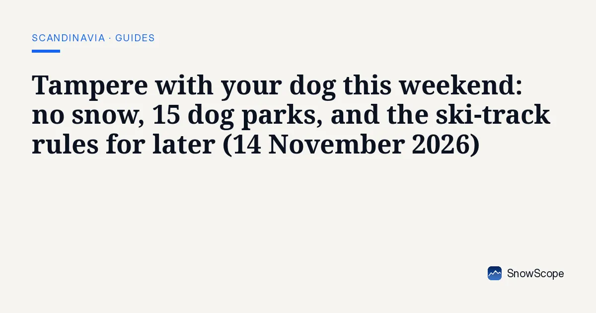

Tampere with your dog this weekend: no snow, 15 dog parks, and the ski-track rules for later (14 November 2026)
There is no snow in Tampere yet: the stations around the city measured bare ground on Friday, and Saturday's wet flakes, under 1 cm, will hardly settle. In our snow history the city is a few days behind its usual first snow. So this is a weekend for the dog parks, and a good moment to learn the winter rules before the tracks open.
See the live snow forecast for Tampere in the SnowScope appSnow depth, powder alerts and the 3D map, free.
Where the dog can run
Tampere lists 15 fenced dog parks. Hakametsä, on Uudenkylänkatu, is one of the largest at 4478 m². Isolammenpuisto has a 1615 m² section for large dogs and 860 m² for small ones, and Rantaperkiö is set in a forest-like park. Next to the dog park on Simppoonkatu at Santalahti there is a swimming spot for dogs.

Leash rules
In built-up areas a dog must be on the lead all year. In the countryside the hunting-law season, when dogs must be leashed or immediately leashable, runs from 1 March to 19 August, so it is not in force now. Inside fenced dog parks the dog may be loose.
When the snow comes
Dogs are not allowed on the city's groomed ski tracks, and walking on the tracks is banned too. The exception is the dog ski track on the Peltolammi track, open on certain evenings each week: skis only, dog on a lead, and at least 100 m between teams. Check the city's ski-track page for the times once the tracks open.
Tips for skiers
- Saturday's wet snow on cold ground can freeze overnight: careful on the shore paths on Sunday morning.
- The lakes are not frozen: keep the dog off any thin ice along Näsijärvi and Pyhäjärvi.
- Dark afternoons: reflective vest and a collar light for the park walk.
More maps (external sites)
References and credits
- Finnish Meteorological Institute, open data (daily snow depth) en.ilmatieteenlaitos.fi/open-data
- City of Tampere, dog as a pet (leash rules, Public Order Act section 14) www.tampere.fi/luonto-ja-ymparisto/elaimet/koira-lemmikkina
- City of Tampere, dog parks (koirapuistot) www.tampere.fi/luonto-ja-ymparisto/elaimet/koirapuistot
- City of Tampere, ski tracks (hiihtoladut), dog ski track www.tampere.fi/liikunta/liikuntapaikat/hiihtoladut
- Open-Meteo, weather forecast data (ECMWF and ICON models) open-meteo.com/
About these numbers
Snow depth today: measured at weather stations on the morning of 13 November 2026 (Finnish Meteorological Institute); a station reports the snow on its own small plot, so a few kilometres away and a hundred metres higher the ground can look different. Usual depth for the date: SnowScope snow history, 46 past winters (1980-81 to 2025-26), a model of the past at the city's height, not a station record. Weekend: two weather models (ECMWF IFS and DWD ICON, read through Open-Meteo), given as a range. Places and rules: the official pages listed below.
Cite this report
For research, teaching or the press: the numbers and charts are free to reuse under CC BY 4.0 with this citation.
SnowScope (2026), Tampere with your dog this weekend: no snow, 15 dog parks, and the ski-track rules for later (14 November 2026), https://snowscope.app/blog/en/2026/11/tampere-dog-snow-weekend-14-november-2026.html, accessed 2026-11-14
SnowScope (Atlas Labs). (2026, November 14). Tampere with your dog this weekend: no snow, 15 dog parks, and the ski-track rules for later (14 November 2026). SnowScope snow reports. https://snowscope.app/blog/en/2026/11/tampere-dog-snow-weekend-14-november-2026.html
BibTeX
@misc{snowscope2026tamperedogsnowweekend14n,
author = {{SnowScope (Atlas Labs)}},
title = {Tampere with your dog this weekend: no snow, 15 dog parks, and the ski-track rules for later (14 November 2026)},
year = {2026},
month = nov,
howpublished = {\url{https://snowscope.app/blog/en/2026/11/tampere-dog-snow-weekend-14-november-2026.html}},
note = {Published 2026-11-14 13:29 UTC; accessed 2026-11-14}
}· CC BY 4.0 · Methods, data and tools →
Follow Tampere
Free: a message when fresh snow is coming, and the forecast every morning.
More snow reports

Banff Sunshine Village month by month: about 100 cm at mid-mountain in a usual March over 46 past winters, April deepest near the top, and a season into late May.

Aspen Snowmass compared: Snowmass has about 75 in (190 cm) at the usual peak at mid-mountain over 46 past winters, Aspen Mountain about 69 in (174 cm). Terrain, access, safety.

La Grave's snowpack grew 17 cm in a week to 43 cm on 14 November, now forecast to gain 61 cm over the next 72 hours as a system moves across the Alps.